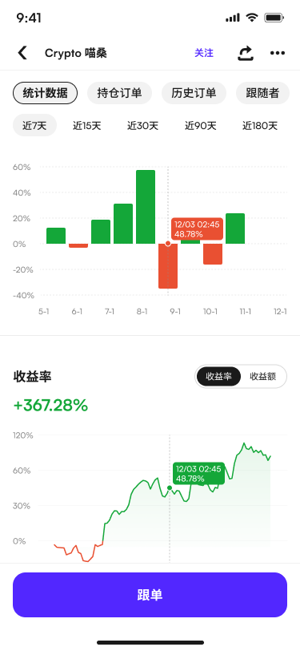

产品需要同时服务保守型跟单者、积极型跟单者与策略观察者。三类用户在选择交易员时关注的指标不同，但旧信息结构缺少明确优先级。
COPY TRADING · 2025–2026 · COINW
跟单
交易系统
从 0 到 1 设计 CoinW 跟单交易产品，覆盖交易员排行、跟单设置、实时 PnL 可视化与社交信任机制，让专业交易数据对新用户同样可读。

正在讲解趋势策略分享中
32 人正在跟随收益领先中
本周新增跟随者 +156较上周增长 28%
累计分润突破 4.5万 USDT继续加油，收益长虹！
03 / Complete Case StudyScroll to explore
01 / Overview
专业内容，小白可读
真正懂数据的用户不需要跟单，而需要跟单的用户往往看不懂数据。设计重点不是隐藏复杂度，而是让不同深度的信息逐层出现。
02 / Process
从用户分层到信任闭环
用户分层
拆分三类用户旅程，识别各自在选择交易员时的决策依据。
数据优先级
梳理 30+ 指标，确定首屏三件套：30 日收益、最大回撤、跟随人数。
可视化
用收益曲线、周期柱状图和风险颜色强化趋势与波动感知。
跟单设置
将 12 个参数拆为基础与高级设置，默认折叠低频选项。
社交信任
加入风格标签、动态、问答与关注关系，补足数据之外的判断线索。
03 / Screens
真实产品界面

04 / Highlights
三处关键决策
交易员排行
多维筛选与卡片对比，让收益、风险和热度可以快速横向判断。
渐进式跟单
优先呈现金额和关键风控，将高级参数后置，缩短首次操作路径。
可读 PnL
用分层数据与趋势图同时支持快速扫描和深入复盘。
05 / Results
上线后的核心指标
+38%新用户激活率
+27%跟单用户 7 日留存
4.6/5数据展示满意度
10k+上线 30 天日均活跃
06 / Insight
复杂数据的可读性不是靠“简化”实现，而是靠“分层”——让对的人在对的时机看到对的数据。